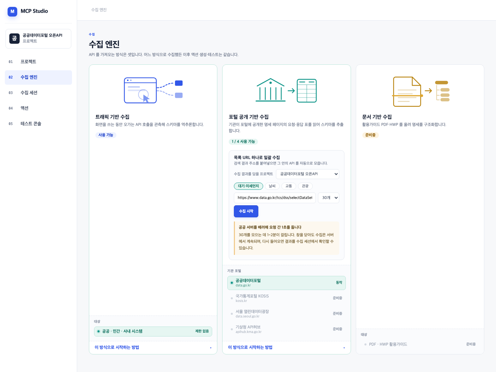
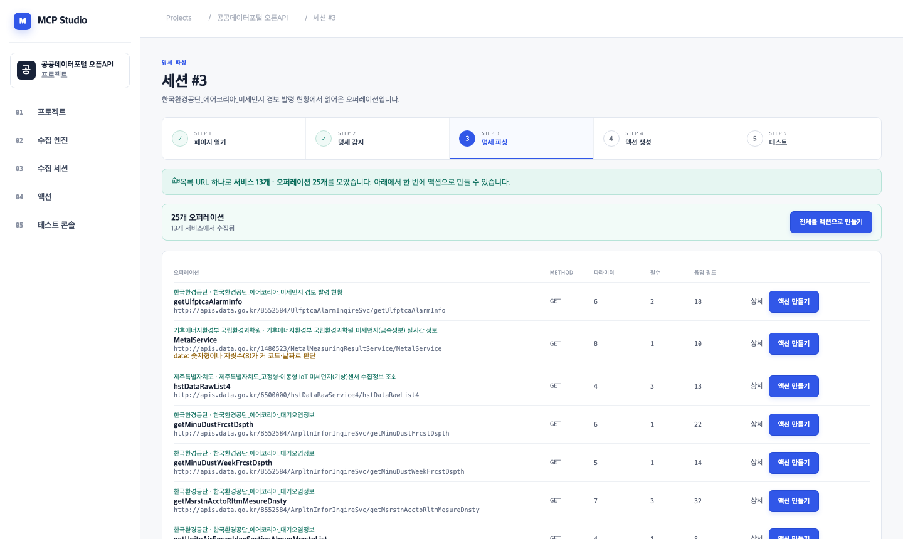
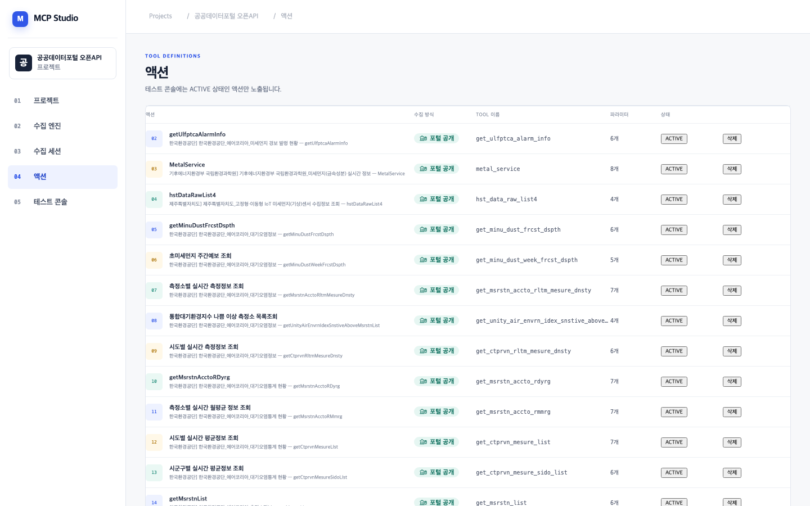

어제 요청하신 “공공데이터포털을 등록하면 API 20~50개를 자동으로 모아 MCP로 변환”을 만들고, 실제 사이트로 끝까지 돌려봤습니다.
① 공공데이터포털 검색 주소 하나를 넣고 “수집 시작”을 누르면, 목록을 넘겨가며 API 명세를 자동으로 모읍니다.
② 모은 뒤 “전체를 액션으로 만들기” 한 번이면 25개가 전부 MCP 도구가 됩니다.
③ 실제 data.go.kr 로 검증했고, PR #9 로 올려두었습니다. 지금 바로 열어보실 수 있습니다.
PR: #9 포털 목록 URL 하나로 API 를 일괄 수집한다 · 브랜치 feature/portal-bulk-crawl
상세페이지를 한 장씩 열고 확장에서 수집 클릭.
게다가 포털은 상세기능을 목록에서 하나씩만 보여줘서, 한 서비스에 5개가 있으면 목록을 5번 바꿔야 했습니다.
25개를 모으려면 사람이 25번 이상 클릭.
검색 주소 한 줄 붙여넣고 수집 시작 1번.
목록을 넘겨가며 서비스마다 상세기능을 전부 펼쳐 모읍니다.
사람이 누르는 건 2번 — 수집 시작, 전체 액션 만들기.



‘미세먼지’로 검색한 결과에서 서비스 13곳, API 25개를 모았습니다. 아래는 실제 수집 결과입니다.
| 기관 · 서비스 | API 수 |
|---|---|
| 한국환경공단 — 에어코리아 대기오염정보 | 5 |
| 한국환경공단 — 에어코리아 대기오염통계 현황 | 4 |
| 한국환경공단 — 에어코리아 측정소정보 | 3 |
| 한국환경공단 — 에어코리아 오존황사 발생정보 | 2 |
| 부산광역시 — 대기질 정보 조회 | 2 |
| 부산광역시 — 실내공기질 실시간 측정 | 2 |
| 기후에너지환경부 국립환경과학원 — 미세먼지(금속성분) | 1 |
| 제주특별자치도 — IoT 미세먼지 센서 | 1 |
| 산림청 국립산림과학원 — 청정넷 측정데이터 | 1 |
| … 외 4개 서비스 | |
selectApiDetailFunction.do 를 부른다는 걸 찾아내서, 그 경로로 나머지도 자동으로 가져오게 했습니다. 이게 없었으면 서비스당 1개씩 13개밖에 못 모읍니다.PARSERS 목록에 함수 하나 추가하는 구조로 만들어서, KOSIS·서울 열린데이터광장은 함수 하나면 붙습니다. 화면에는 “준비중”으로 이미 자리를 잡아뒀습니다.
남의 서버를 긁는 기능이라, 물어보면 답할 수 있게 다음을 넣었습니다.
| 장치 | 내용 |
|---|---|
| 요청 간격 1초 | 기존 실행기와 같은 기준. 25개에 2분이 걸리는 이유이자, 줄이지 않는 이유입니다. |
| 상한 60개 | 무제한 순회하지 않습니다. 화면에서는 최대 50개까지 고를 수 있습니다. |
| 사용자 주도 | 사람이 주소를 등록하고 버튼을 눌러야만 돕니다. 스케줄러도, 자동 재수집도 없습니다. |
| 로그인 불필요 | 비로그인으로 읽히는 공개 페이지만 봅니다. 계정·비밀번호를 다루지 않습니다. |
| 인증키 은닉 | serviceKey 는 LLM에게 보여주지 않고 호출 직전에 넣습니다. 키가 없으면 호출 전에 막고 이유를 알려줍니다. |
| 파일 | 하는 일 |
|---|---|
services/portal_crawler.py 신규 | 목록 → 상세 → 상세기능 전부. 주소 정규화·페이징·중복 제거·간격 조절 |
services/crawl_runner.py 신규 | 백그라운드 실행과 진행 상황 기록. 끝나면 세션·오퍼레이션으로 저장 |
components/PortalCrawlPanel.tsx 신규 | 주소 입력·키워드 버튼·진행률·완료 안내 패널 |
tests/test_portal_crawler.py 신규 | 주소 정규화·목록 파싱·상한 검증 8개 |
routers/spec.py 보강 | 수집 시작·진행 조회 + 일괄 액션 생성(중복 건너뛰기 포함) |
pages/SpecSessionDetail.tsx 보강 | 서비스명 표시, 요약 줄, 전체 액션 버튼, 안내 문구 분기 |
models.py 보강 | CrawlJob 추가 (진행 상황 보관) |
트래픽 기반 수집은 손대지 않았습니다. 기존 기록·액션·콘솔 경로 그대로입니다.
139개 통과
(기존 대비 8개 추가). 남의 서버 상태에 좌우되는 테스트는 만들지 않았습니다 — 빨간불이 자주 켜지면 아무도 안 보게 되니까요.
실제 data.go.kr 로 25개 수집 → 액션 25개 생성 → 재실행 시 중복 0 → 인증키 은닉 확인까지 끝까지 돌렸습니다.
모두 한국어로 원인과 다음 행동을 알려줍니다. 심사 중 문제가 생겨도 화면만 보고 설명할 수 있습니다.
| 항목 | 상태 |
|---|---|
| 서버 | 실행 중 백엔드 :8000 · 관리자 :5173 |
| 데모 데이터 | 세션 2개(일괄 25 / 단건 1) · MCP 도구 25개 ACTIVE |
| PR | #9 OPEN — 10파일 +983 |
| 이전 PR | #2 · #3 · #5 · #7 머지됨 |
| 브랜치 | feature/portal-bulk-crawl (master 기준) |
| 안 한 것 | 이유 |
|---|---|
| 수집 성공률 개선 | 명세 표가 없는 서비스를 억지로 파싱하면 틀린 도구가 생깁니다. 성공한 것만 보여주는 편이 안전합니다. |
| 속도 향상(병렬 요청) | 남의 서버에 대한 예의를 깨는 방향입니다. 시연은 편성으로 해결하는 게 맞습니다. |
| KOSIS·서울광장 파서 | 구조는 이미 열어뒀습니다(PARSERS). 지금 넣으면 검증할 시간이 없어 “준비중”이 정직합니다. |
| 수집 결과 자동 발행 | 사람이 한 번은 확인하고 넘어가는 편이 낫습니다. 잘못 만든 도구가 조용히 발행되면 되돌리기 어렵습니다. |